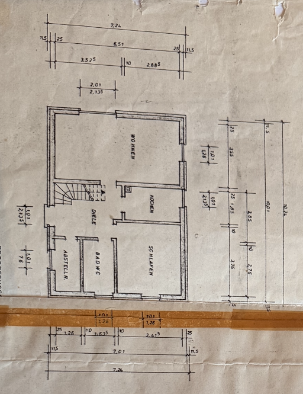

Planung laeuft
Bestandsaufnahme, Grundsatzentscheidungen und Sanierungsplanung
Das Ferien-/Wochenendhaus in der Wilhelm-Busch-Strasse 7 soll technisch, energetisch und innenraeumlich saniert und kuenftig moeglichst ganzjaehrig selbst genutzt werden.
Kritische Blocker
Erst klaeren, dann beauftragen
Baurecht und Foerderung
Dauerhafte Wohnnutzung und Foerderfaehigkeit als Wohngebaeude sind noch nicht belastbar geklaert.
Statik Durchbruch
Die Wand zwischen Kueche und Wohnzimmer darf erst nach fachlicher Pruefung geoeffnet werden.
Dach, Wand, Feuchte
Dachaufbau, Hohlraum, Schlagregen- und Feuchterisiken muessen vor Daemmung geprueft werden.
Elektro und PV
Zustand der Elektroanlage, PV-Leistung, Betreiberwechsel und Einspeiseverguetung sind offen.
Gewerke
Massnahmenstatus
Bereich
Status
Naechster Schritt
Datei
Bestand
Grundriss und Aufmass
Standard ist jetzt das echte Planfoto. Die farbigen Flaechen, Labels und Masse liegen nur als transparente Orientierungsschicht darueber. So bleibt die Originalgeometrie sichtbar und die Arbeitsgrafik erfindet keine Waende.
{kind=link}
{kind=link}
- Originalplan bleibt sichtbar
- Overlays sind nur Orientierung
- Massketten separat dokumentiert
- Vor-Ort-Aufmass bleibt noetig
Wohnen
[ABGELESEN] Groesserer Aufenthaltsraum; geplante Oeffnung zur Kueche pruefen.
Kueche
[ABGELESEN] Angrenzend an Wohnen; Leitungen und Wanddurchbruch offen.
Schlafen
[ABGELESEN] Lage aus Planbild uebertragen; genaue Masse offen.
Diele
[ABGELESEN] Treppen-/Erschliessungsbereich schematisch nachgezeichnet.
Bad/WC
[ABGELESEN] Nassbereich; Bestand Warmwasser und Leitungen offen.
Abstellen
[ABGELESEN] Nebenraum; Nutzung und Technikbezug noch klaeren.

Archiv